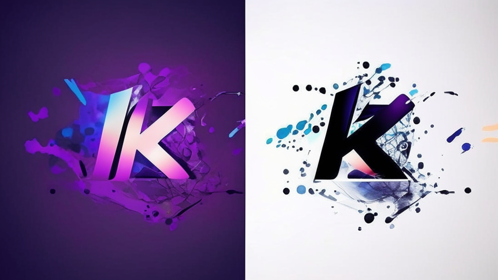
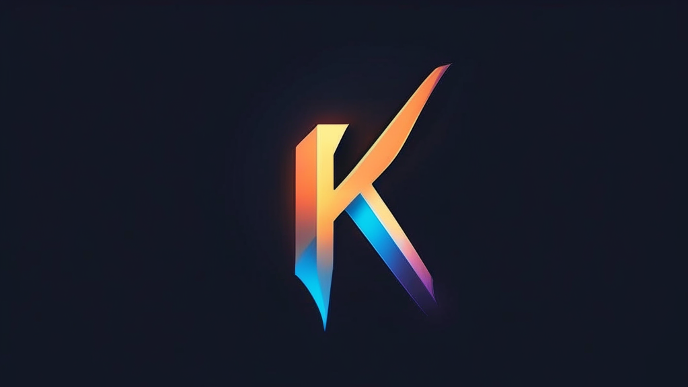
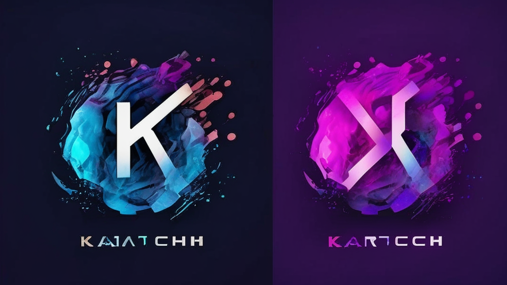

Как ускорить старый сайт без полной переработки
Практический разбор оптимизации legacy-проектов.
Читать кейс
↗Кейс полной миграции digital-активов производственного холдинга с устаревших CMS на единую платформу 1С-Битрикс. Организация процесса, автоматизация переноса данных, настройка интеграций и обучение сотрудников — всё без остановки продаж.

К нам обратился производственный холдинг с 50+ разрозненными сайтами на различных CMS: Joomla, Drupal, старые версии WordPress и самописные решения.
Каждый проект развивался независимо, поэтому со временем инфраструктура превратилась в набор несвязанных между собой технологических стеков.

Основные проблемы, которые требовалось решить:
Ключевое требование проекта — миграция без остановки продаж.
Мы разработали многоэтапный план миграции, рассчитанный на шесть месяцев.
| Этап | Срок | Задачи |
|---|---|---|
| Аудит и анализ | 2 недели | Инвентаризация сайтов, анализ структуры данных и оценка рисков. |
| Разработка инструментов | 1 месяц | Скрипты переноса данных и тестовое окружение. |
| Пилотная миграция | 3 недели | Перенос первых пяти сайтов. |
| Основная миграция | 4 месяца | Поэтапный перенос оставшихся проектов. |
Для минимизации рисков мы реализовали механизм отката на предыдущую версию. В случае критической проблемы можно было вернуться к старой системе в течение 30 минут.
После анализа существующей инфраструктуры мы выбрали единую платформу, которая позволила стандартизировать разработку, поддержку и дальнейшее развитие сайтов.

Мы разработали автоматизированный конвейер миграции, который позволил минимизировать количество ручных операций.
Автоматизация — ключ к успеху массовой миграции. Большая часть данных переносилась без ручного вмешательства.
Среднее время миграции одного сайта составило 72 часа от начала работ до полного переключения трафика.
После переноса контента мы настроили ключевые интеграции и сервисы, необходимые для работы проектов.

Проект завершился за 5,5 месяцев — на две недели раньше первоначального плана.
После завершения миграции клиент передал техническую поддержку проектов на абонентское обслуживание и запланировал дальнейшее развитие созданной инфраструктуры.
Реальные кейсы, технические разборы и решения задач, с которыми сталкивается бизнес в цифровой среде.
Практический разбор оптимизации legacy-проектов.
Читать кейс
↗Практический разбор оптимизации legacy-проектов.
Читать кейс
↗Практический разбор оптимизации legacy-проектов.
Читать кейс
↗Практический разбор оптимизации legacy-проектов.
Читать кейс
↗